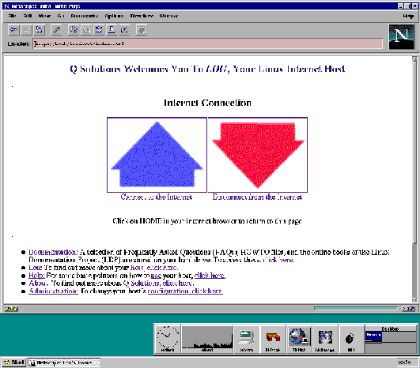

Basic pointers to get you going
This
page serves as a basic tour of your Internet Host. More extensive documentation
is available by clicking here and by browsing the
man pages (manual).
The Virtual Screen
The Button Bar
The Task Bar
The Main Menu
Screen Resolution
Virtual Consoles
Using Floppy Disks
Shutting Down the Host
Administration
Main Menu